Risk graphs — Tuesday, November 10, 2026
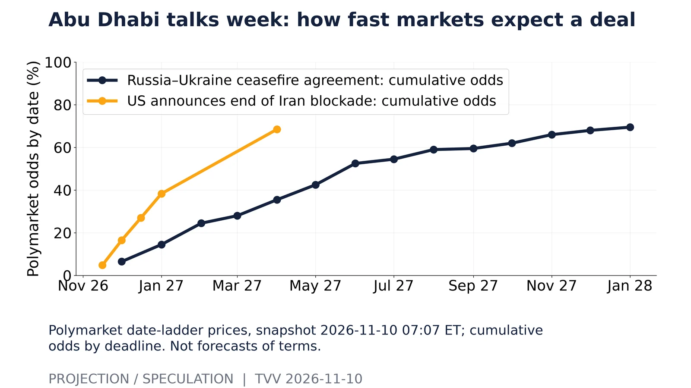
Abu Dhabi talks week: how fast markets expect a deal. Polymarket date-ladder prices, snapshot 2026-11-10 07:07 ET; cumulative odds by deadline. Not forecasts of terms.Source: https://polymarket.com/event/russia-x-ukraine-ceasefire-agreement-by 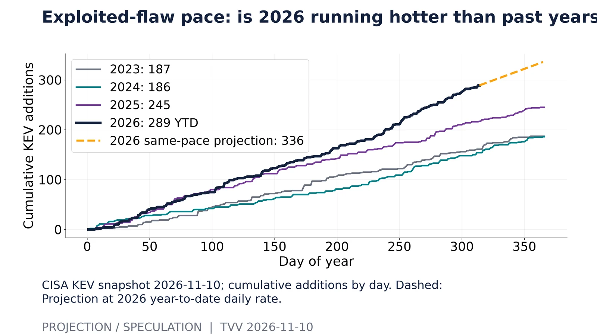
Exploited-flaw pace: is 2026 running hotter than past years?. CISA KEV snapshot 2026-11-10; cumulative additions by day. Dashed: Projection at 2026 year-to-date daily rate.Source: https://www.cisa.gov/sites/default/files/feeds/known_exploited_vulnerabilities.json 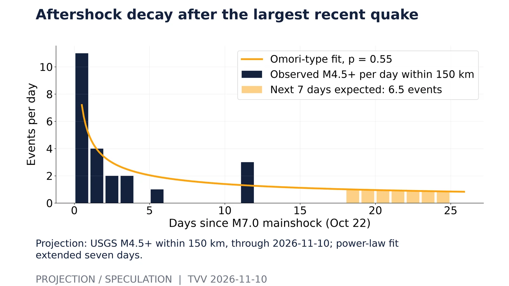
Aftershock decay after the largest recent quake. Projection: USGS M4.5+ within 150 km, through 2026-11-10; power-law fit extended seven days.Source: https://earthquake.usgs.gov/fdsnws/event/1/query?format=geojson&starttime=2026-10-10&endtime=2026-11-10T12:00:00&minmagnitude=4.5 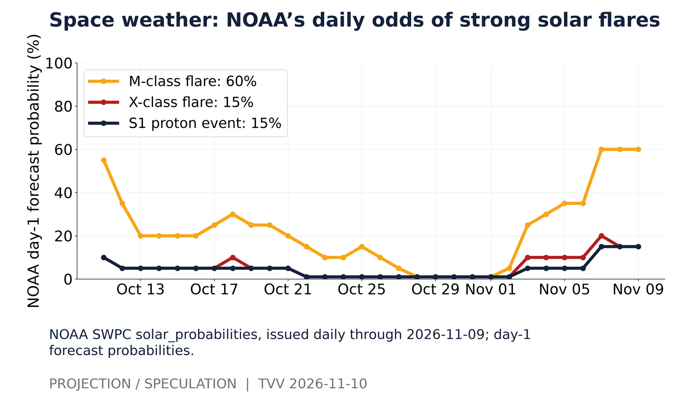
Space weather: NOAA’s daily odds of strong solar flares. NOAA SWPC solar_probabilities, issued daily through 2026-11-09; day-1 forecast probabilities.Source: https://services.swpc.noaa.gov/json/solar_probabilities.json 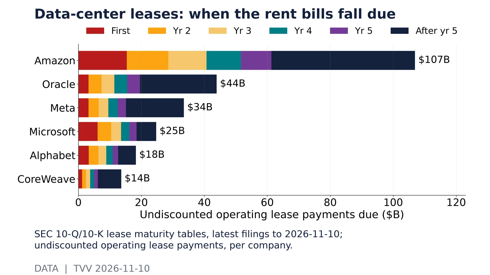
Data-center leases: when the rent bills fall due. SEC 10-Q/10-K lease maturity tables, latest filings to 2026-11-10; undiscounted operating lease payments, per company.Source: https://data.sec.gov/api/xbrl/companyfacts/CIK0000789019.json 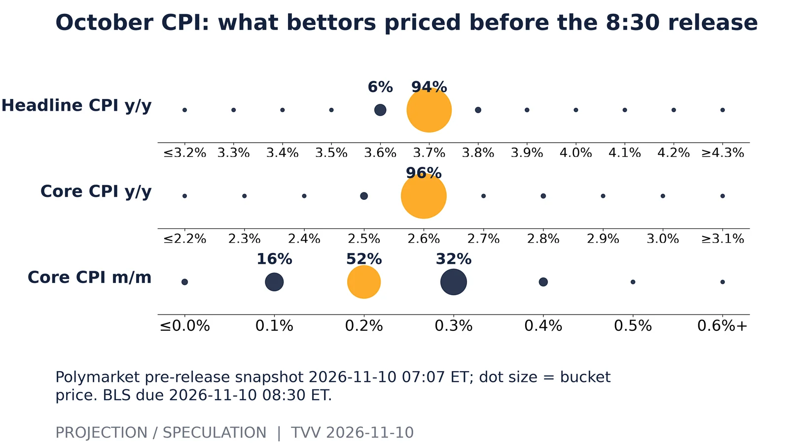
October CPI: what bettors priced before the 8:30 release. Polymarket pre-release snapshot 2026-11-10 07:07 ET; dot size = bucket price. BLS due 2026-11-10 08:30 ET.Source: https://polymarket.com/event/october-inflation-us-annual 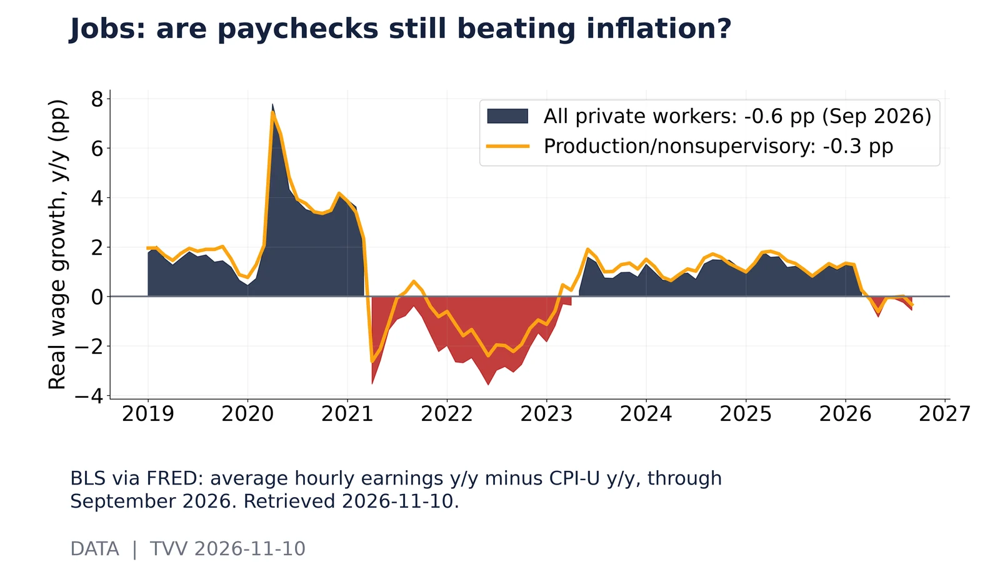
Jobs: are paychecks still beating inflation?. BLS via FRED: average hourly earnings y/y minus CPI-U y/y, through September 2026. Retrieved 2026-11-10.Source: https://fred.stlouisfed.org/series/CES0500000003 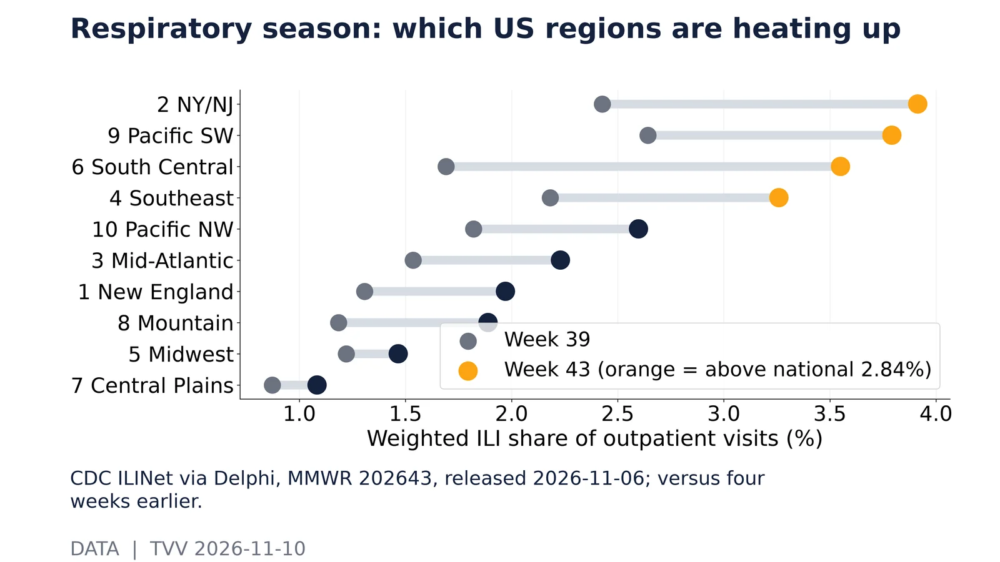
Respiratory season: which US regions are heating up. CDC ILINet via Delphi, MMWR 202643, released 2026-11-06; versus four weeks earlier.Source: https://api.delphi.cmu.edu/epidata/fluview/?regions=hhs1,hhs2,hhs3,hhs4,hhs5,hhs6,hhs7,hhs8,hhs9,hhs10,nat&epiweeks=202630-202645 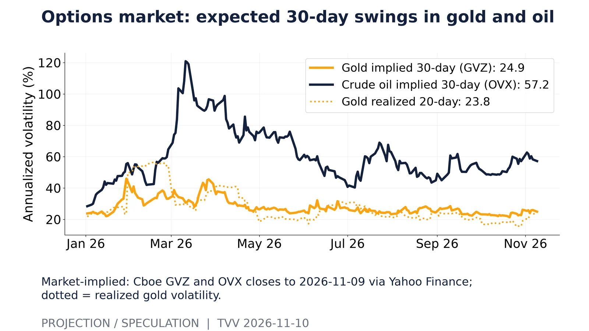
Options market: expected 30-day swings in gold and oil. Market-implied: Cboe GVZ and OVX closes to 2026-11-09 via Yahoo Finance; dotted = realized gold volatility.Source: https://query1.finance.yahoo.com/v8/finance/chart/%5EGVZ?range=1y&interval=1d 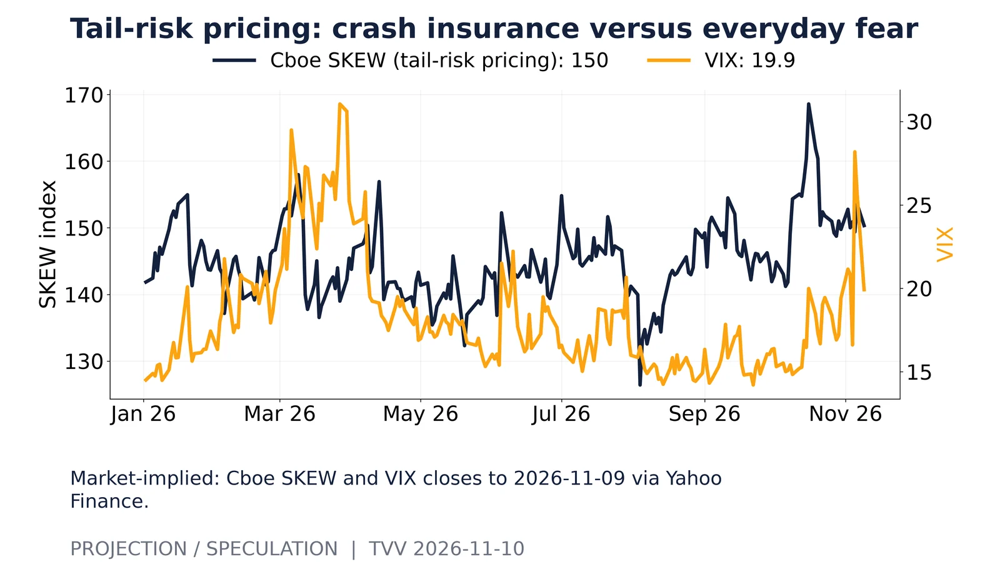
Tail-risk pricing: crash insurance versus everyday fear. Market-implied: Cboe SKEW and VIX closes to 2026-11-09 via Yahoo Finance.Source: https://query1.finance.yahoo.com/v8/finance/chart/%5ESKEW?range=1y&interval=1d 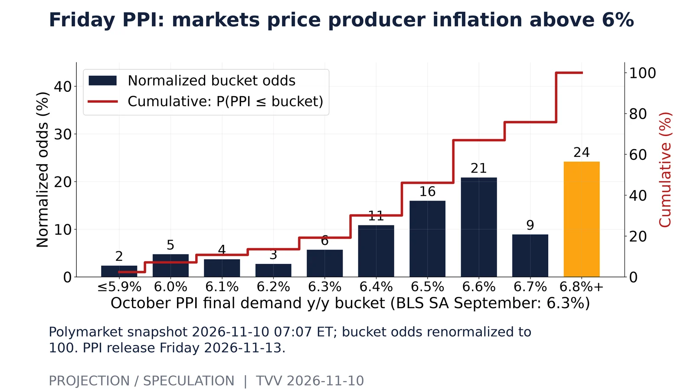
Friday PPI: markets price producer inflation above 6%. Polymarket snapshot 2026-11-10 07:07 ET; bucket odds renormalized to 100. PPI release Friday 2026-11-13.Source: https://polymarket.com/event/ppi-yoy-october-2026 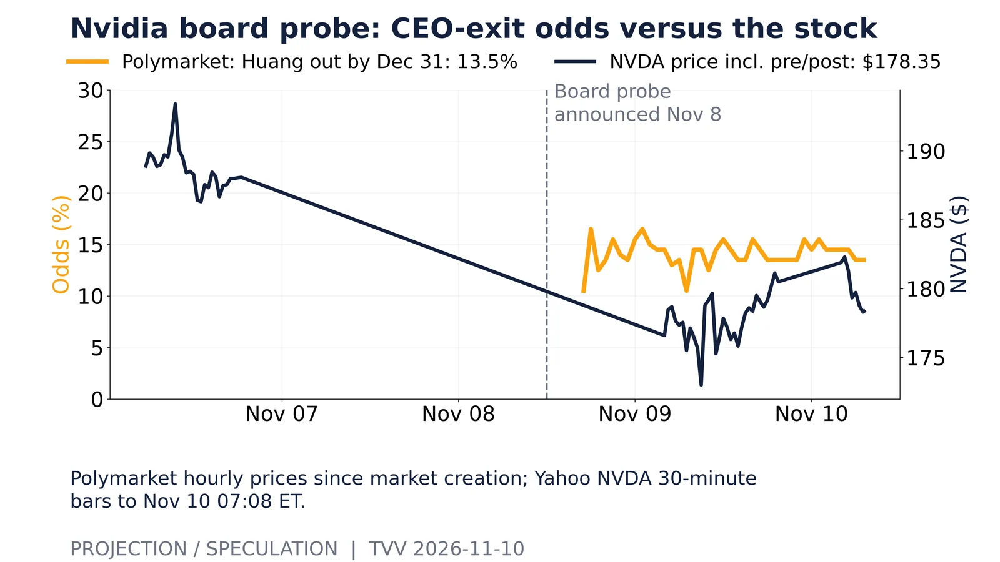
Nvidia board probe: CEO-exit odds versus the stock. Polymarket hourly prices since market creation; Yahoo NVDA 30-minute bars to Nov 10 07:08 ET.Source: https://polymarket.com/event/jensen-huang-announced-resignation-or-removal-by-december-31 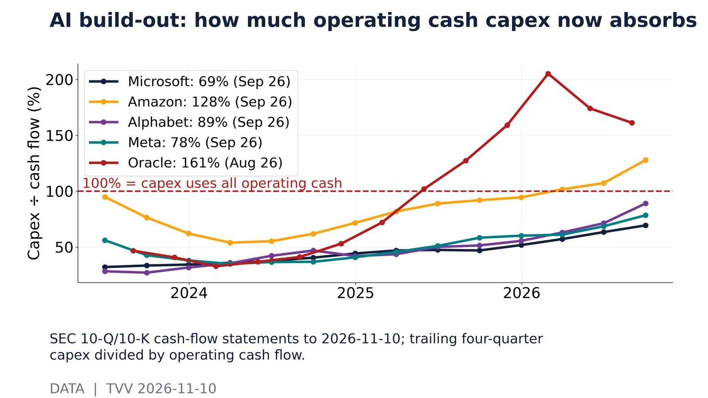
AI build-out: how much operating cash capex now absorbs. SEC 10-Q/10-K cash-flow statements to 2026-11-10; trailing four-quarter capex divided by operating cash flow.Source: https://data.sec.gov/api/xbrl/companyfacts/CIK0000789019.json